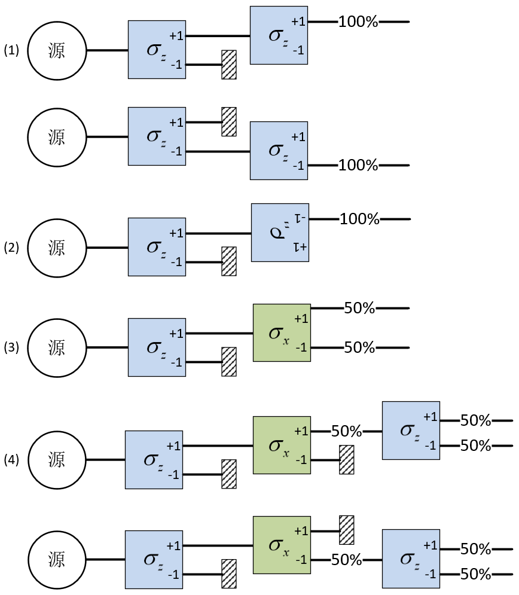
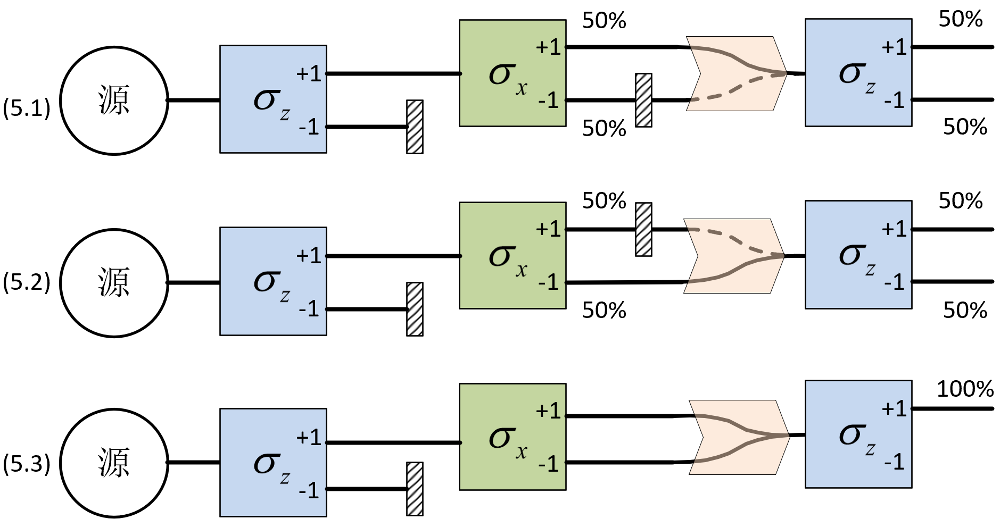

1 Vectors and Quantum States
Many people contributed to quantum mechanics through different approaches, including numerous false starts. Following the historical route is therefore not the most efficient way to learn the subject. We will begin directly with the basic principles of modern quantum mechanics.
1.1 The Stern–Gerlach experiment
Spin angular momentum \({\bf{S}}\) is an intrinsic property of a microscopic particle, like its charge or mass, and its magnitude is fixed. Charge and mass are scalars, whereas spin is a vector: although its magnitude is fixed, its projection along a spatial direction can vary and is quantized. Particles whose spin projection can take only \(+ {\hbar \mathord{\left/ {\vphantom {\hbar 2}} \right. \kern-1.2pt } 2}\) or \(- {\hbar \mathord{\left/ {\vphantom {\hbar 2}} \right. \kern-1.2pt } 2}\) are called spin-1/2 particles; electrons, neutrons, and protons are examples. Such two-state systems are the simplest quantum systems and provide a direct route to the central ideas of quantum mechanics. To avoid repeatedly writing \({\hbar \mathord{\left/ {\vphantom {\hbar 2}} \right. \kern-1.2pt } 2}\), we define a new observable \({\bf{\sigma }}\), \[ {\bf{S}} \equiv \frac{\hbar }{2}{\bf{\sigma }} \tag{1.1}\]
Let the unit vector \({\bf{n}}\) specify a spatial direction, and let \({\sigma _n} \equiv {\bf{\sigma }} \cdot {\bf{n}}\) denote the projection of \({\bf{\sigma }}\) along \({\bf{n}}\). Measuring \({\sigma _n}\) for a spin-1/2 particle can give only \(+ 1\) or \(- 1\).
A Stern–Gerlach (SG) apparatus measures a particle’s spin projection using a strong magnetic-field gradient. Particles emerge at distinct positions along the gradient direction, each exit corresponding to a different spin projection along that direction.1 A spin-\(1/2\) particle has only two possible exits, corresponding to \({\sigma _n} = \pm 1\). Suppose a source continuously emits spin-1/2 particles with random spin orientations. We make the beam sufficiently weak that particles pass individually through the entire apparatus and do not interact. We then perform the experiments illustrated in Figure 1.1.

Figure 1.1. The source on the left emits particles with random spin orientations. Each box represents a \({\sigma }_{n}\) detector. The percentages to its right give the probabilities that a measurement of \({\sigma }_{n}\) yields \(+1\) or \(-1\).
Experiment 1. Place an SG apparatus immediately after the source, with its field gradient along \(z\), to measure \({\sigma _z}\). Particles from the random source leave through its positive and negative exits with equal probability. If we block the \({\sigma _z} = - 1\) exit, only particles with \({\sigma _z} = + 1\) pass through the “\(+1\)” exit. Place a second, identically oriented apparatus after the first apparatus’s “\(+1\)” exit and measure \({\sigma _z}\) again. All particles (\(100\%\)) give \({\sigma _z} = + 1\). Similarly, selecting \({\sigma _z} = - 1\) after the first apparatus and placing the second at its “\(-1\)” exit gives \({\sigma _z} = - 1\) for all particles (\(100\%\)). Rotating both detectors to the same arbitrary direction \({\bf{n}}\) preserves this agreement. Thus, even in the quantum world, a measurement result can be reproduced. Measuring \({\sigma _n}\) also provides a way to prepare particles with \({\sigma _n} = + 1\) or \(- 1\).
Experiment 2. Reverse the orientation of the second \({\sigma _z}\) apparatus relative to the first. Particles emerging from the first apparatus’s “\(+1\)” exit now all emerge from the second apparatus’s “\(-1\)” exit 2, and conversely. The measured quantity changes sign when the detector is reversed, suggesting vector behavior.
Experiment 3. First use a \({\sigma _z}\) apparatus to select particles with \({\sigma _z} = + 1\), and then measure \({\sigma _x}\). We find \({\sigma _x} = + 1\) for 50% of the particles, and \({\sigma _x} = - 1\) for \(50\%\). Classical reasoning would suggest that the upper outgoing beam has both \({\sigma _z} = + 1\) and \({\sigma _x} = + 1\), while the lower beam has both \({\sigma _z} = + 1\) and \({\sigma _x} = - 1\).
Experiment 4. After the second apparatus in Experiment 3, select particles with \({\sigma _x} = + 1\) and pass them through a third apparatus measuring \({\sigma _z}\). The preceding classical argument predicts \({\sigma _z} = + 1\) with certainty. Instead, half the particles give \({\sigma _z} = + 1\) and half give \({\sigma _z} = - 1\). Selecting \({\sigma _x} = - 1\) after the second apparatus and moving the third, \({\sigma _z}\)-measuring apparatus to its “\(-1\)” exit again produces \({\sigma _z} = + 1\) and \({\sigma _z} = - 1\) with equal probabilities. The crucial change is the insertion of a measurement of \({\sigma _x}\) between two measurements of \({\sigma _z}\). Measuring \({\sigma _x}\) completely destroys the previously acquired information about \({\sigma _z}\). This is not a peculiarity of SG apparatus: any method of measuring the \({\bf{\sigma }}\) projection has the same consequence. The values of \({\sigma }_{x}\) and \({\sigma }_{z}\) cannot both be definite for a particle.

Figure 1.2. Recombination of the two SG paths.
Experiment 5. Previously, we moved the next detector to align it with each exit of the preceding one. For convenience, we now use magnets as a beam combiner, merging particles entering at different heights into a single outgoing line. Place it between the second and third apparatuses of Experiment 4, as in Figure 1.2. Experiments 5.1–5.2: block one exit of the second apparatus to select \({\sigma }_{x}=-1\) or \(+1\), and send the selected particles through the combiner into the \({\sigma }_{z}\) detector. As before, \({\sigma }_{z}=+1\) and \(-1\) each occur with probability \(50\%\). Experiment 5.3: remove the blocking plate so that particles from either exit pass through the combiner into the \({\sigma }_{z}\) detector. Classical reasoning says that each “\(\pm 1\)” exit of the \({\sigma }_{x}\) detector is taken with probability \(50\%\), and that particles from either exit subsequently give \(\pm 1\) in the \({\sigma }_{z}\) detector with probability \(50\%\). Opening both exits should therefore still give each \({\sigma }_{z}=\pm 1\) result with probability \(50\%\). In fact, every measurement of \({\sigma }_{z}\) gives \(+1\)! Experiments 4 and 5 show that when the result of \({\sigma }_{x}\) cannot be known, the probability of \({\sigma }_{z}=+1\) is \(100\%\), whereas making the result of \({\sigma }_{x}\) knowable gives the two \({\sigma }_{z}=\pm 1\) results with probability \(50\%\) each.
These observations may seem astonishing, but they describe how the world works. The familiar behavior of the classical world arises as a macroscopic average over enormous numbers of interacting particles.
Experimentally, suppose two directions \({\bf{n}}\) and \({\bf{m}}\) make an angle \(\theta\). First measure the projection of \({\bf{\sigma }}\) along \({\bf{n}}\), obtaining \({\sigma _n} = + 1\), and then measure \({\sigma _m}\), the projection of \({\bf{\sigma }}\) along \({\bf{m}}\). The probabilities of \({\sigma _m} = + 1\) and \(- 1\) are \({\cos ^2}({\theta \mathord{\left/ {\vphantom {\theta 2}} \right. \kern-1.2pt } 2})\) and \({\sin ^2}({\theta \mathord{\left/ {\vphantom {\theta 2}} \right. \kern-1.2pt } 2})\), respectively. In Experiment 1, \(\theta = 0\) and \(\pi\); in Experiment 2, \(\theta = {\pi \mathord{\left/ {\vphantom {\pi 2}} \right. \kern-1.2pt } 2}\). These probabilities give the mean value \(( + 1) \cdot {\cos ^2}({\theta \mathord{\left/ {\vphantom {\theta 2}} \right. \kern-1.2pt } 2}) + ( - 1) \cdot {\sin ^2}({\theta \mathord{\left/ {\vphantom {\theta 2}} \right. \kern-1.2pt } 2}) = \cos (\theta )\) for \({\sigma _m}\). Although individual measurements of \({\bf{\sigma }}\) have unfamiliar outcomes, the average of \({\bf{\sigma }}\) behaves like a classical vector. The mean of \({\bf{\sigma }}\) is also called the spin-polarization vector.
We now develop the basic rules of quantum mechanics and then return to explain these experiments.
1.2 Vector spaces
In classical mechanics, the state of a physical system at time \(t\) is described by the values of its dynamical variables for every particle. For example, the position and momentum of particle \(i\) are \({x}_{i}\left( t\right) ,{p}_{i}\left( t\right)\); angular momentum, kinetic energy, and potential energy are functions of positions and momenta. Knowing all these values at an instant supplies complete information about the system. The state evolves according to Newton’s second law, continually updating the quantities \(\left\{ {x}_{i}\left( t\right) ,{p}_{i}\left( t\right) ,\cdots \right\}\). Mathematically, a classical state is described by these functions of time. Einstein famously said that he did not believe God played dice. In classical mechanics, statistical predictions are needed only when our information or computational power is incomplete. In principle, an observer who knew every particle’s state at one instant and had unlimited computational power could predict the system’s state at any past or future time with unlimited precision. This is classical determinism.
In quantum mechanics, even the spin projections of a single isolated electron along two arbitrary directions cannot both be definite. Experiments show that classical mechanics is a macroscopic approximation to quantum mechanics, whose laws underlie the world we know. Certain important quantities cannot simultaneously be definite: position and momentum, different angular-momentum components, and even kinetic and potential energy. Consequently, the state of a system cannot be described by assigning definite values to all its dynamical variables at one time. We must reconsider the relation between a physical state and its dynamical variables.
In quantum mechanics, the system’s state is called a quantum state, while its dynamical variables are called observables. They are different kinds of objects. Given the state at one instant, the Schrödinger equation determines its subsequent evolution. However, the state gives only the probabilities of the possible values of observables. What mathematical objects should represent states and observables? A central contribution of Heisenberg, Schrödinger, Dirac, and others was to find a precise mathematical language for quantum mechanics. Several equivalent formulations exist. We use the concise and general Dirac–von Neumann formulation; Heisenberg’s matrix mechanics and Schrödinger’s wave mechanics are concrete realizations of it.
The relationship between observables and quantum states is the relationship between operators and vectors.
Quantum postulate. A physical system’s quantum state contains all the information about that system at the given instant. Mathematically, the state is represented by a vector in a complex linear vector space.
The word vector can refer either to an ordinary vector in three-dimensional Cartesian space or to an abstract state vector, which can cause confusion. We will distinguish spatial vectors, referring to physical three-dimensional space, from state vectors, representing quantum states. The space containing all possible state vectors of a system is its state space, or Hilbert space.
Dirac introduced the notation \(\lvert\text{vector name}\rangle\) for a vector and called it a ket.
Vectors have the following properties:
\[ \begin{aligned}\text{Commutativity:}\quad &\lvert\psi_\alpha\rangle+\lvert\psi_\beta\rangle=\lvert\psi_\beta\rangle+\lvert\psi_\alpha\rangle\\\text{Complex scalars:}\quad &c\lvert\psi\rangle=\lvert\psi\rangle c\\\text{Distributivity:}\quad &(c_1+c_2)\lvert\psi\rangle=c_1\lvert\psi\rangle+c_2\lvert\psi\rangle\\&c(\lvert\psi_\alpha\rangle+\lvert\psi_\beta\rangle)=c\lvert\psi_\alpha\rangle+c\lvert\psi_\beta\rangle\end{aligned} \tag{1.2}\]
Here \(c,{c_1},{c_2}\) are complex numbers. These properties are natural and easy to remember. The precise definitions of vector addition and multiplication by a complex number will be specified in concrete examples.
Zero vector. Every vector space contains a special zero vector, denoted \(\left\vert {{\rm{null}}} \right\rangle\), which may be thought of as having zero length. It is defined by the following condition for every vector \(\left\vert \psi \right\rangle\):
\[ \left\vert {{\rm{null}}} \right\rangle + \left\vert \psi \right\rangle = \left\vert \psi \right\rangle , \qquad \qquad 0\left\vert \psi \right\rangle = \left\vert {{\rm{null}}} \right\rangle \tag{1.3}\]
If \(\left. \vert {\psi }_{1}\right\rangle\) and \(\left. \vert {\psi }_{2}\right\rangle\) belong to the same vector space, their linear combination \(\vert \psi\rangle = {c_1}\left\vert {{\psi _1}} \right\rangle + {c_2}\left\vert {{\psi _2}} \right\rangle\) belongs to that space as well. If a vector is a linear combination of other vectors, those vectors together are linearly dependent.
1.3 Examples of complex linear vector spaces
A complex linear vector space is an abstract concept. The following examples make it concrete. Decide which collections of mathematical objects form such spaces, paying attention to how vector addition and scalar multiplication are defined.
Example 1: all complex column matrices with \(n\) components.
Each complex column matrix with \(n\) components is a vector. Any linear combination of two such \(n\)-component columns is again a column with \(n\) components. Indeed, column matrices are among the most common representations of quantum states.
\[ \begin{pmatrix}a_1\\a_2\\a_3\\\vdots\\a_n\end{pmatrix},\quad a_i\in\mathbb C;\qquad\lvert\mathrm{null}\rangle=\begin{pmatrix}0\\0\\0\\\vdots\\0\end{pmatrix} \tag{1.4}\]
Example 2: all solutions of a homogeneous linear differential equation.
For example, consider all solutions of
\[ \frac{{{d^2}}}{{d{t^2}}}x(t) + 2\beta \frac{d}{{dt}}x(t) + \omega _0^2x(t) = 0 \tag{1.5}\]
If \({x_1}(t)\) and \({x_2}(t)\) are solutions, any complex linear combination of them is also a solution. The collection of solutions forms a vector space.
1.4 Bras and inner products
The ket \(\left\vert \psi \right\rangle\) has a corresponding bra, written \(\left\langle \psi \right\vert\). Each ket \(\left\vert \psi \right\rangle\) has a unique dual bra \(\left\langle \psi \right\vert\), and conversely. Kets form the ket space and bras form the bra space. These spaces obey the same vector-space rules: replacing each ket in the preceding identities by its corresponding bra gives valid identities.
The bra space corresponding to a ket space is specified by the following duality rules:
\[ \begin{gathered} \text{Bra space}:\text{Ket space} \\ c* \leftrightarrow c \\ \left\langle \psi \right\vert \leftrightarrow \left\vert \psi \right\rangle \\ {c^*}\left\langle \psi \right\vert \leftrightarrow c\left\vert \psi \right\rangle \\ c_1^*\left\langle \alpha \right\vert + c_2^*\left\langle \beta \right\vert \leftrightarrow c_1^{}\left\vert \alpha \right\rangle + c_2^{}\left\vert \beta \right\rangle \\ \end{gathered} \tag{1.6}\]
If bras and kets correspond one to one, why introduce bras? Duality allows two vectors to produce a number. Just as the dot product of two Cartesian vectors is a real number, the inner product of two vectors in a complex vector space is a complex number, written
\[ \left\langle \varphi \right\vert \cdot \left\vert \psi \right\rangle \equiv \left\langle {\varphi } \mathrel{\left \vert {\vphantom {\varphi \psi }} \right. \kern-1.2pt } {\psi } \right\rangle = c \tag{1.7}\]
The inner product \(\left\langle {\varphi } \mathrel{\left \vert {\vphantom {\varphi \psi }} \right. \kern-1.2pt } {\psi } \right\rangle\) may be viewed as the projection of \(\left\vert \psi \right\rangle\) onto \(\left\vert \varphi \right\rangle\), or the amount of \(\left\vert \varphi \right\rangle\) contained in \(\left\vert \psi \right\rangle\).
The inner product obeys the following rules.
Distributivity:
\[ \begin{array}{l} \langle \gamma\vert \left( {{c_1}\vert \alpha\rangle + {c_2}\vert \beta\rangle } \right) = {c_1}\left\langle {\gamma } \mathrel{\left \vert {\vphantom {\gamma \alpha }} \right. \kern-1.2pt } {\alpha } \right\rangle + {c_2}\left\langle {\gamma } \mathrel{\left \vert {\vphantom {\gamma \beta }} \right. \kern-1.2pt } {\beta } \right\rangle ,\\ \left( {{c_1}\langle \gamma\vert {\rm{ + }}{c_2}\langle \beta\vert } \right)\vert \alpha\rangle = {c_1}\left\langle {\gamma } \mathrel{\left \vert {\vphantom {\gamma \alpha }} \right. \kern-1.2pt } {\alpha } \right\rangle + {c_2}\left\langle {\beta } \mathrel{\left \vert {\vphantom {\beta \alpha }} \right. \kern-1.2pt } {\alpha } \right\rangle \end{array} \tag{1.8}\]
Conjugate symmetry:
\[ \left\langle {\varphi } \mathrel{\left \vert {\vphantom {\varphi \psi }} \right. \kern-1.2pt } {\psi } \right\rangle = \left\langle {\psi } \mathrel{\left \vert {\vphantom {\psi \varphi }} \right. \kern-1.2pt } {\varphi } \right\rangle * \tag{1.9}\]
From Equation 1.9, the inner product of a vector with itself must be real.
\[ \left\langle {\psi } \mathrel{\left \vert {\vphantom {\psi \psi }} \right. \kern-1.2pt } {\psi } \right\rangle = \left\langle {\psi } \mathrel{\left \vert {\vphantom {\psi \psi }} \right. \kern-1.2pt } {\psi } \right\rangle * \tag{1.10}\]
We further require
\[ \left\langle {\psi } \mathrel{\left \vert {\vphantom {\psi \psi }} \right. \kern-1.2pt } {\psi } \right\rangle \ge 0 \tag{1.11}\]
Equality holds only for \(\vert \psi\rangle = \vert {{\rm{null}}}\rangle\). A vector \(\vert \psi\rangle\) whose inner product with itself is one,
\[ \left\langle {\psi } \mathrel{\left \vert {\vphantom {\psi \psi }} \right. \kern-1.2pt } {\psi } \right\rangle = 1 \tag{1.12}\]
is normalized. Any nonzero, unnormalized vector \(\left\vert \psi \right\rangle\) can be normalized as follows:
\[ \left\vert {\tilde \psi } \right\rangle = \frac{{\left\vert \psi \right\rangle }}{{\sqrt {\left\langle {\psi } \mathrel{\left \vert {\vphantom {\psi \psi }} \right. \kern-1.2pt } {\psi } \right\rangle } }} \tag{1.13}\]
The concrete rules for bras, kets, and inner products depend on the representation of the vectors. Consider the following example.
Example. We know that complex column matrices form a complex linear vector space. How can their inner product produce a number and satisfy all the rules from Equation 1.7 to Equation 1.11? In linear algebra, multiplying a row matrix by a column matrix gives a number. Thus, if a column represents a ket, its conjugate-transpose row represents the dual bra. For example,
\[ \begin{array}{l} \left\vert \phi \right\rangle = \left( {\begin{array}{*{20}{c}} {{a_1}}\\ {{a_2}} \end{array}} \right) \leftrightarrow \left\langle \phi \right\vert = \left( {\begin{array}{*{20}{c}} {a_1^*}&{a_2^*} \end{array}} \right)\\ \left\vert \psi \right\rangle = \left( {\begin{array}{*{20}{c}} {{b_1}}\\ {{b_2}} \end{array}} \right) \leftrightarrow \left\langle \psi \right\vert = \left( {\begin{array}{*{20}{c}} {b_1^*}&{b_2^*} \end{array}} \right) \end{array} \tag{1.14}\]
The inner product \(\left\langle {\phi } \mathrel{\left \vert {\vphantom {\phi \psi }} \right. \kern-1.2pt } {\psi } \right\rangle\) can then be defined by ordinary matrix multiplication:
\[ \left\langle {\phi } \mathrel{\left \vert {\vphantom {\phi \psi }} \right. \kern-1.2pt } {\psi } \right\rangle = \left( {\begin{array}{*{20}{c}} {a_1^*}&{a_2^*} \end{array}} \right)\left( {\begin{array}{*{20}{c}} {{b_1}}\\ {{b_2}} \end{array}} \right) = a_1^*{b_1} + a_2^*{b_2} \tag{1.15}\]
These definitions of bras, kets, and inner products satisfy all the required properties, including Equation 1.9.
\[ \left\langle {\psi } \mathrel{\left \vert {\vphantom {\psi \phi }} \right. \kern-1.2pt } {\phi } \right\rangle = \left( {\begin{array}{*{20}{c}} {b_1^*}&{b_2^*} \end{array}} \right)\left( {\begin{array}{*{20}{c}} {{a_1}}\\ {{a_2}} \end{array}} \right) = b_1^*{a_1} + b_2^*{a_2} = {({b_1}a_1^* + {b_2}a_2^*)^*} = {\left\langle {\phi } \mathrel{\left \vert {\vphantom {\phi \psi }} \right. \kern-1.2pt } {\psi } \right\rangle ^*} \tag{1.16}\]
1.5 Orthogonality and basis vectors
Two Cartesian vectors \({\bf{a}},{\bf{b}}\) are perpendicular when \({\bf{a}} \cdot {\bf{b}} = 0\). At most three nonzero vectors in three-dimensional Cartesian space can be mutually perpendicular. Rotating such a set gives infinitely many alternative sets, but never more than three mutually perpendicular vectors; this is the dimension of the space. Given mutually perpendicular unit vectors \({\bf{x}},{\bf{y}},{\bf{z}}\), any Cartesian vector \({\bf{v}}\) can be expressed as their linear combination:
\[ {\bf{v}} = \left( {{\bf{x}} \cdot {\bf{v}}} \right){\bf{x}} + \left( {{\bf{y}} \cdot {\bf{v}}} \right){\bf{y}} + \left( {{\bf{z}} \cdot {\bf{v}}} \right){\bf{z}} = {v_x}{\bf{x}} + {v_y}{\bf{y}} + {v_z}{\bf{z}} \tag{1.17}\]
The three components of \({\bf{v}}\) can also be written as a column matrix:
\[ {\bf{v}} = \left( {\begin{array}{*{20}{c}} {{v_x}}\\ {{v_y}}\\ {{v_z}} \end{array}} \right){\rm{ = }}\left( {\begin{array}{*{20}{c}} {{\bf{x}} \cdot {\bf{v}}}\\ {{\bf{y}} \cdot {\bf{v}}}\\ {{\bf{y}} \cdot {\bf{v}}} \end{array}} \right) \tag{1.18}\]
The matrix entries—the components of \({\bf{v}}\)—depend on the coordinate system. Rotating the \({\bf{x}},{\bf{y}},{\bf{z}}\) axes changes the components of \({\bf{v}}\). The coordinate unit vectors, however, always have the following column representations in their own coordinate system:
\[ {\bf{x}} = \left( {\begin{array}{*{20}{c}} 1\\ 0\\ 0 \end{array}} \right), \qquad {\bf{y}} = \left( {\begin{array}{*{20}{c}} 0\\ 1\\ 0 \end{array}} \right), \qquad {\bf{z}} = \left( {\begin{array}{*{20}{c}} 0\\ 0\\ 1 \end{array}} \right) \tag{1.19}\]
We now extend these concepts to vector spaces. Two nonzero vectors \(\left\vert \psi \right\rangle\) and \(\left\vert \phi \right\rangle\) are orthogonal if their inner product vanishes, \(\langle \psi\vert \phi\rangle = 0\). The dimension is the maximum number of mutually orthogonal vectors. In the space of two-component columns, the inner product defined in Equation 1.15 allows infinitely many orthogonal pairs; here are three pairs of normalized vectors:
\[ \left( {\begin{array}{*{20}{c}} 1\\ 0 \end{array}} \right),\;\;\left( {\begin{array}{*{20}{c}} 0\\ 1 \end{array}} \right); \qquad \frac{1}{{\sqrt 2 }}\left( {\begin{array}{*{20}{c}} 1\\ 1 \end{array}} \right),\;\;\frac{1}{{\sqrt 2 }}\left( {\begin{array}{*{20}{c}} 1\\ { - 1} \end{array}} \right); \qquad \frac{1}{{\sqrt 2 }}\left( {\begin{array}{*{20}{c}} 1\\ i \end{array}} \right),\;\;\frac{1}{{\sqrt 2 }}\left( {\begin{array}{*{20}{c}} 1\\ { - i} \end{array}} \right) \tag{1.20}\]
Once one such pair is chosen, no third nonzero column vector is orthogonal to both. The vector space of two-component columns therefore has dimension two.
A set of \(N\) mutually orthogonal, normalized vectors in an \(N\)-dimensional vector space forms a complete basis, usually called a basis; its members are basis vectors. For any two basis vectors \(\vert i\rangle ,\vert j\rangle\),
\[ \left\langle {j} \mathrel{\left \vert {\vphantom {j i}} \right. \kern-1.2pt } {i} \right\rangle = {\delta _{ij}} \tag{1.21}\]
The symbol \({\delta _{ij}}\) is the Kronecker delta, defined by
\[ {\delta _{ij}} = \left\{ \begin{array}{l} 1, & i = j\\ 0, & i \ne j \end{array} \right. \tag{1.22}\]
A vector space has infinitely many possible complete bases. Each pair in Equation 1.20 is a complete basis for the two-dimensional space. A basis acts like a coordinate system: every vector can be expanded as a linear combination of the basis vectors. In an \(N\)-dimensional space spanned by \(\left\{ {\left\vert i \right\rangle } \right\},\;i \in \left\{ {1,2...N} \right\}\), any vector \(\left\vert \psi \right\rangle\) can be written as
\[ \left\vert \psi \right\rangle = \sum\limits_i {{a_i}\left\vert i \right\rangle } \tag{1.23}\]
Here \({a_i}\) is a complex number giving the component of \(\left\vert \psi \right\rangle\) along \(\left\vert i \right\rangle\). Taking the inner product with a basis vector \(\left\langle j \right\vert\) on both sides gives
\[ \left\langle {j} \mathrel{\left \vert {\vphantom {j \psi }} \right. \kern-1.2pt } {\psi } \right\rangle = \sum\limits_i {\left\langle j \right\vert {a_i}\left\vert i \right\rangle } = \sum\limits_i {{a_i}\left\langle {j} \mathrel{\left \vert {\vphantom {j i}} \right. \kern-1.2pt } {i} \right\rangle } = \sum\limits_i {{a_i}{\delta _{ij}}} = {a_j} \tag{1.24}\]
Thus the component of \(\left\vert \psi \right\rangle\) along \(\left\vert i \right\rangle\) is \(\left\langle {i} \mathrel{\left \vert {\vphantom {i \psi }} \right. \kern-1.2pt } {\psi } \right\rangle\), and
\[ \left\vert \psi \right\rangle = \sum\limits_i {\left\langle {i} \mathrel{\left \vert {\vphantom {i \psi }} \right. \kern-1.2pt } {\psi } \right\rangle \left\vert i \right\rangle } = \sum\limits_i {\left\vert i \right\rangle } \left\langle {i} \mathrel{\left \vert {\vphantom {i \psi }} \right. \kern-1.2pt } {\psi } \right\rangle \tag{1.25}\]
This is an important identity. In the final step, the scalar \(\left\langle {i} \mathrel{\left \vert {\vphantom {i \psi }} \right. \kern-1.2pt } {\psi } \right\rangle\) has been moved from the left of \(\left\vert i \right\rangle\) to its right so that \(\sum\nolimits_i {\left\vert i \right\rangle \left\langle i \right\vert }\) appears together. Section 2.4 explains why. Combining Equation 1.6 and Equation 1.9 also gives the bra expansion:
\[ \left\langle \psi \right\vert = \sum\limits_i {\left\langle {\psi } \mathrel{\left \vert {\vphantom {\psi i}} \right. \kern-1.2pt } {i} \right\rangle } \left\langle i \right\vert \tag{1.26}\]
1.6 Matrix representations of vectors
Just as a Cartesian vector can be written as a column, the expansion Equation 1.25 of a state vector has a column-matrix representation:
\[ \lvert\psi\rangle=\begin{pmatrix}\langle 1\vert\psi\rangle\\\langle 2\vert\psi\rangle\\\vdots\\\langle N\vert\psi\rangle\end{pmatrix} \tag{1.27}\]
Each basis vector, expressed in its own complete basis, has the column representation
\[ \left\vert 1 \right\rangle = \left( {\begin{array}{*{20}{c}} 1\\ 0\\ \vdots \\ 0 \end{array}} \right), \qquad \left\vert 2 \right\rangle = \left( {\begin{array}{*{20}{c}} 0\\ 1\\ \vdots \\ 0 \end{array}} \right), \qquad \cdots \qquad \left\vert N \right\rangle = \left( {\begin{array}{*{20}{c}} 0\\ 0\\ \vdots \\ 1 \end{array}} \right) \tag{1.28}\]
The entries of a vector’s matrix representation depend on the chosen basis. Columns expressed in different bases cannot be combined directly in matrix calculations.
The following comparison between Cartesian vectors and abstract state vectors may help make the latter more familiar.
\[ \begin{array}{*{20}{c}} {\text{Cartesian space}}&{{\text{ }} \to {\text{ }}}&{\text{Vector space}} \\ {\text{Dot product}:{\mathbf{a}} \cdot {\mathbf{b}} = {\mathbf{b}} \cdot {\mathbf{a}}}&{}&{\text{Inner product}:\;\langle \phi\vert \psi\rangle = {{\langle \psi\vert \phi\rangle }^*}} \\ {\text{Perpendicular}:{\mathbf{a}} \cdot {\mathbf{b}} = 0}&{}&{\text{Orthogonal}:\;\langle \psi\vert \phi\rangle = 0} \\ {\text{Coordinate unit vectors}{\mathbf{\hat x}},{\mathbf{\hat y}},{\mathbf{\hat z}}}&{}&{\text{Basis vectors}{\text{ }}\left\{ {\vert i\rangle } \right\}} \\ {\text{Coordinate system}}&{}&{\text{Complete basis}(\text{basis})} \\ {\text{Coordinates}:{\mathbf{v}} = \left( {\begin{array}{*{20}{c}} {{\mathbf{\hat x}} \cdot {\mathbf{v}}} \\ {{\mathbf{\hat y}} \cdot {\mathbf{v}}} \\ {{\mathbf{\hat z}} \cdot {\mathbf{v}}} \end{array}} \right)}&{}&{\text{Basis expansion}:\left\vert \psi \right\rangle = \left( {\begin{array}{*{20}{c}} {\left\langle {1} \mathrel{\left \vert {\vphantom {1 \psi }} \right. \kern-1.2pt } {\psi } \right\rangle } \\ {\left\langle {2} \mathrel{\left \vert {\vphantom {2 \psi }} \right. \kern-1.2pt } {\psi } \right\rangle } \\ \vdots \\ {\left\langle {N} \mathrel{\left \vert {\vphantom {N \psi }} \right. \kern-1.2pt } {\psi } \right\rangle } \end{array}} \right)} \end{array} \tag{1.29}\]
1.7 Exercises
1.1. Determine whether each of the following collections forms a Hilbert space.
All complex numbers.
All vectors in three-dimensional Cartesian space.
The solutions \(\psi (x)\) of the following equation, where \(E\) is real and \(V(x)\) is a finite, continuous function of \(x\).
\[ \left[ { - \frac{{{\hbar ^2}}}{{2m}}\frac{{{d^2}}}{{d{x^2}}} + V(x)} \right]\psi (x) = E\psi (x) \tag{1.30}\]
1.2. Prove \(\left\langle {\alpha } \mathrel{\left \vert {\vphantom {\alpha \alpha }} \right. \kern-1.2pt } {\alpha } \right\rangle \left\langle {\beta } \mathrel{\left \vert {\vphantom {\beta \beta }} \right. \kern-1.2pt } {\beta } \right\rangle \ge {\left\vert {\left\langle {\alpha } \mathrel{\left \vert {\vphantom {\alpha \beta }} \right. \kern-1.2pt } {\beta } \right\rangle } \right\vert ^2}\).
Hint: construct \(\vert \psi \rangle\) as a linear combination of \(\vert \alpha\rangle\) and \(\vert \beta\rangle\), and use Equation 1.11 \(\left\langle {\psi } \mathrel{\left \vert {\vphantom {\psi \psi }} \right. \kern-1.2pt } {\psi } \right\rangle \ge 0\).
1.3. A two-dimensional vector \(\left\vert \psi \right\rangle\) has the following expansion in the basis \(\left\{ {\vert {\alpha _1}\rangle ,\vert {\alpha _2}\rangle } \right\}\):
\[ \vert \psi \rangle = \vert {\alpha _1}\rangle + 3\vert {\alpha _2}\rangle \tag{1.31}\]
A second basis \(\left\{ {\vert {\beta _1}\rangle ,\vert {\beta _2}\rangle } \right\}\) satisfies
\[ \left\vert {{\beta _1}} \right\rangle = \frac{1}{{\sqrt 2 }}\left( {\vert {\alpha _1}\rangle + i\vert {\alpha _2}\rangle } \right), \qquad \left\vert {{\beta _2}} \right\rangle = \frac{1}{{\sqrt 2 }}\left( {\vert {\alpha _1}\rangle - i\vert {\alpha _2}\rangle } \right) \tag{1.32}\]
Find the expansion of \(\left\vert \psi \right\rangle\) in the second basis, using two different methods.
A Stern–Gerlach apparatus directly measures the magnetic moment \(\mu\), with \(\mu =\gamma S\), where \(\gamma\) is a constant.↩︎
The force on the particle is \({F}_{z}\propto {\sigma }_{z}\frac{\partial {B}_{z}}{\partial z}\). The \(z\) axis is fixed. Reversing the detector along \(z\) reverses both the magnetic-field gradient convention and \({B}_{z}\), so the sign of the gradient of \({B}_{z}\) remains unchanged. The sign of the particle’s \({\sigma }_{z}\) does not depend on detector orientation, so \({F}_{z}\) is unchanged and the particle still leaves through the upper exit. However, the exits marked \(+1\) and \(-1\) have exchanged places, so the particle now exits through \(-1\). We need not know the detector’s internal operation: its scale labels values of \({\sigma }_{z}\). Experiment shows that oppositely oriented detectors assign opposite signs to the same measured quantity.↩︎